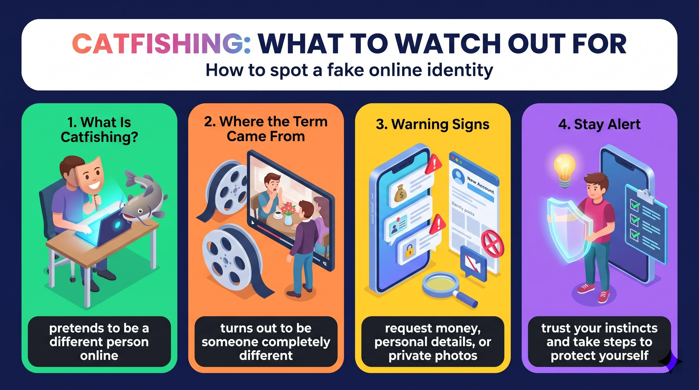

想像你和某人在網路上聊了好幾週，漸漸對對方有了感情。
you have started to develop feelings for them某天對方索取金錢或私密照片——這時你該停下來想想，對方可能是假身分的騙子。
they request money or private photos帳號最近才建立或貼文很少要小心；要求視訊，對方一直迴避就有問題；到其他平台搜尋核對資料。
they may not be who they claim to be網友也許真的是好人，但感覺不對時，就相信直覺、謹慎行事。
trust your instincts and play it safeImagine (V) + (that) 子句 (O)，主詞 you 省略；子句內有兩組 you have been chatting、you have started。
have been V-ing for＋時間（一直……）；start to V／start V-ing；develop feelings for sb；them 在此是性別中立的單數「對方」。
Imagine（祈使動詞）you have been chatting with someone online for weeks,（名詞子句一（完成進行式））and you have started to develop feelings for them.（名詞子句二）語塊 1（想像一下）➔ 語塊 2（你【和某人在網路上】聊了好幾週）➔ 語塊 3（也漸漸對對方有了感情）
第二人稱開場，先說「想像一下」，把讀者帶進情境。
(that)：眼睛往左看——是及物動詞 Imagine；往右看——you have been chatting ... 是完整句。動詞後面接一整件事 ➔ 名詞子句，that 常省略。and：連接子句裡的兩件事：聊了好幾週、開始有感情，前後是時間的先後。them 在這裡指 someone，是性別中立的單數用法，現代英文很常見。
have been V-ing for＋時間：I have been studying for two hours.Imagine (that) you ... 立刻把讀者拉進情境。they (S) + request (V) + money or private photos (O)。
request 及物動詞直接接受詞；one day（某天）；However 前面要句號。
However, one day（轉折副詞＋時間）they request money or private photos.（主幹）語塊 1（然而，某天）➔ 語塊 2（對方開口索取金錢或私密照片）
短句，照順序翻。However 和 one day 一起放句首。
they request ... 一組主詞動詞。句首的 However 是轉折副詞，跟上一句之間是句號，不能用逗號連起來。request 當動詞直接接受詞：✗ request for money；當名詞才是 a request for money。
request sth＝ask for sth；make a request for sth。However, one day ...This (S) + is (V) + when ... (C)，後面 because 再接原因。
when you should stop and think 是名詞子句當補語；because they may be a catfish 是原因副詞子句；破折號後 someone with a fake identity 是同位語，解釋 catfish。
This is when ...（這就是……的時候）；with＋N 修飾 someone；identity 是名詞「身分」。
This is when you should stop and think,（主句＋when 名詞子句）because they may be a catfish（原因副詞子句）—someone with a fake identity.（同位語（破折號））語塊 1（這就是你該停下來好好想一想的時候）➔ 語塊 2（因為對方可能是網路騙子）➔ 語塊 3（——也就是【用假身分的】人）
This is when 先翻成「這就是……的時候」，這是提醒讀者的關鍵句。
when：往左看——是 be 動詞 is，沒有時間名詞當先行詞；往右看——you should stop and think 是完整句。be 動詞後接一整件事，when 引導名詞子句當補語，意思是「……的時候」。同類句型：This is why ...（這就是為什麼）、This is how ...（這就是……的方法）。because：後面是原因，從屬連接詞。This is when／why／how S + V；someone with＋N＝someone who has＋N。This is when you should ...The term (S) + comes from (V) + the 2010 documentary Catfish (O)，and catfishing (S) + has become (V) + a real threat (C)。
come from（源自）；since then＋完成式；a threat to N；privacy 不可數。
The term comes from the 2010 documentary Catfish,（主句一）and since then,（對等連接詞＋時間副詞）catfishing has become a real threat to your privacy.（主句二）語塊 1（這個詞源自 2010 年的紀錄片《鯰魚》）➔ 語塊 2（從那時起）➔ 語塊 3（catfishing 就成了【你隱私的】一大威脅）
兩個主句照順序翻，and 可以用時間片語自然帶過。
The term comes from ...、右邊 catfishing has become ... 都是完整句，and 對等連接。since then 是副詞片語（then＝那時），不是連接詞，但它決定了時態：起點在過去、持續到現在，所以用 has become。since then, catfishing became a threat。
come from＝originate from；since then＝ever since。The term comes from ...how (疑問詞) + can (助V) + you (S) + identify (V) + a catfish (O)。
identify（v. 辨識）與 identity（n. 身分）是同族字，學測常考詞性；問句語序 how can you V。
So（承接副詞）how can you identify a catfish?（疑問句）語塊 1（那麼）➔ 語塊 2（你要怎麼辨識出網路騙子呢）
這是過渡問句，直接照順序翻。
So 不是連接詞，而是口語的承接副詞「那麼」。後面是標準的疑問句語序：疑問詞 how＋助動詞 can＋主詞 you＋原形動詞 identify。identify 是動詞，identity 是名詞。can 後面一定接動詞 identify。
identify (v.)／identity (n.)／identification (n.)。So how can you ...?look at (V) + their account (O)，冒號後再接 If ..., be careful。
be careful（祈使句，be 原形）；very few＋複數 N；was created 被動。
First, look at their account:（祈使句（步驟一））If it was created recently or has very few posts,（條件副詞子句）be careful.（祈使句）語塊 1（首先，看看對方的帳號）➔ 語塊 2（如果帳號是【最近才】建立的，或貼文非常少）➔ 語塊 3（就要小心）
First 開頭是步驟一，照順序翻。
If：冒號後的 If 子句交代條件，主句 be careful 是祈使句，正好對應 Language Notes 的 If + S + V, 祈使句。or：連接 was created recently 和 has very few posts，兩個動詞共用主詞 it，只要符合一個就要小心。are careful。
First, ... Next, ... Finally, ...（步驟連接詞）；be careful／be patient。First, look at ...ask for (V) + a video call (O)。
ask for＋N（要求某物）；video call 譯「視訊通話」。
Next,（序數副詞）ask for a video call.（祈使句）語塊 1（接著）➔ 語塊 2（要求和對方視訊）
步驟二，一句話就說完。
ask for，主詞 you 省略。Next 是步驟副詞，和上一句的 First 呼應。ask for＋東西（要求某物）、ask sb to V（要求某人做某事）：ask them to video chat。
ask for help／advice；ask sb to V。First ... Next ... Also ...they (S) + may not be (V) + who they claim to be (C)。
If they keep avoiding it 是條件副詞子句；who they claim to be 是名詞子句當補語。
keep V-ing（一直）；avoid V-ing／N；claim to be（聲稱是）。
If they keep avoiding it,（條件副詞子句）they may not be（主句）who they claim to be.（名詞子句（補語））語塊 1（如果對方一直迴避）➔ 語塊 2（對方可能就不是）➔ 語塊 3（他們自稱的那個人）
If 子句先翻，交代對方一直迴避的情況。
If：條件副詞子句。keep avoiding 連用兩個「只接 V-ing」的動詞：keep 後面接 V-ing，avoid 後面也接 V-ing（或名詞 it）。who：往左看——是 be 動詞 may not be；往右看——they claim to be ___ 缺補語。who 自己就是補語，引導名詞子句，語序是直述句。who do they claim to be 是問句語序，放在句中不行。
keep＋V-ing；avoid＋V-ing（✗ avoid to V）。They may not be who they claim to be.You (S) + can search for (V) + them (O)。
to see if their personal details match 是不定詞表目的，if 名詞子句＝whether。
search for；match（相符、一致）是不及物動詞；personal details（個人資料）。
You can also search for them（主幹）on other platforms（介系詞片語（地點））to see if their personal details match.（不定詞＋if 名詞子句）語塊 1（你也可以）➔ 語塊 2 提前（到其他平台上）➔ 搜尋對方 ➔ 語塊 3（看看對方的個人資料是否一致）
主幹「你也可以搜尋對方」，但地點要先說。
see；往右看——their personal details match 完整句。動詞後面的 if 子句是名詞子句，意思是「是否」，可以換 whether。If they keep avoiding it：那個 if 在句首帶逗號，是「如果」。同一篇文章兩種 if 一起出現，就是在考你分辨。
see／check if＝whether；A matches B（A 與 B 相符）。You can also V ... to see if ...Your new friend (S) + may turn out (V) + to be real (C)，but 後面是 If 子句＋兩個祈使句 trust your instincts and play it safe。
turn out (to be) Adj.（結果是……）；feel＋Adj.；play it safe（謹慎行事）。
Your new friend may turn out to be real,（主句一（讓步））but if something feels wrong,（對等連接詞＋條件子句）trust your instincts and play it safe.（兩個祈使句）語塊 1（你的網友也許真的是本人）➔ 語塊 2（但如果覺得有什麼不對勁）➔ 語塊 3（就相信直覺、謹慎行事）
結尾句先讓步，說網友也可能是真的。
Your new friend may turn out to be real——網友也可能是好人。but 正面出拳：轉到真正的建議。if something feels wrong：條件副詞子句；feel 是連綴動詞，接形容詞 wrong。and：並列兩個祈使句 trust、play，主詞 you 省略。turn out (to be) real／true；play it safe＝be careful。... may ..., but if ..., trust ... and ...1. 請選出最適合填入 (1) 的字：
claim to be：聲稱是……。2. 請選出最適合填入 (2) 的字：
request your phone number。3. 請選出最適合填入 (3) 的字：
4. 請選出最適合填入 (4) 的字：
ask for＋N：要求某物。5. 請選出最適合填入 (5) 的字：
keep V-ing；avoid 也接 V-ing／N。6. Imagine you have been chatting with someone for weeks and have started to ________ feelings for them.
develop feelings for sb：漸漸對某人產生感情。7. A catfish is someone with a fake ________.
identity。8. Catfishing has become a real ________ to your privacy.
a threat to N。9. If an account was created ________ and has very few posts, be careful.
was created recently：最近才建立。10. 下列哪一句文法正確？
11. 下列哪一句文法正確？
claim to be。12. 「看看他們的資料是否一致。」最佳英譯是：
see if＋S＋V（看看是否）。13. According to the article, what should you do when someone requests private photos?
14. Which is NOT one of the checking steps in the article?
15. What does the writer mainly want readers to do?